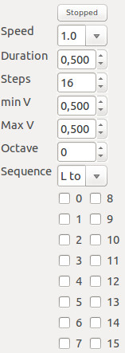

Percussion Panel

This panels allows to run step sequencer with tuned percussive sounds based on active oscillators
-
Stopped / Playing - activate, deactivate the step sequencer
-
Speed - speed of the step sequencer relative to global BpM
-
Duration - duration of the step sequencer notes relative to global BpM and Speed
-
minV/MaxV - set the minimum and maximum volume for the single steps (randomly generated)
-
Octave - octave transposition of step sequencer notes
-
Sequence - how sequence of step sequencer notes is generated (based on list of active oscillators)
-
Steps of the step sequencer - check the steps that must play
Back to main page